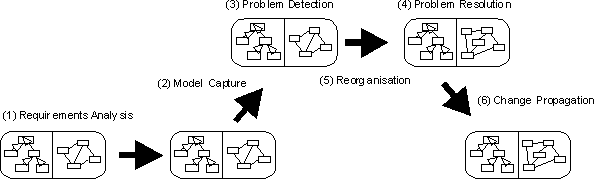
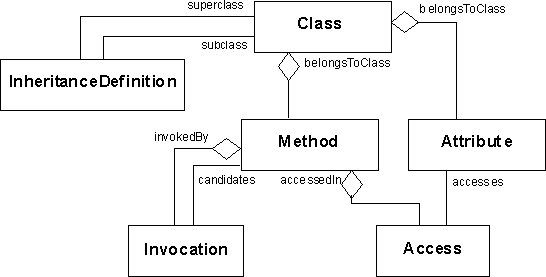
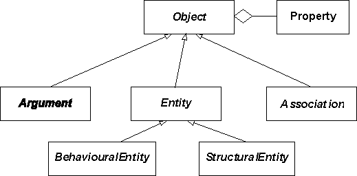
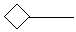
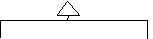
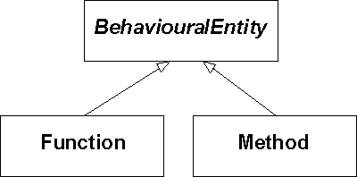
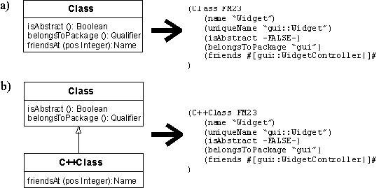
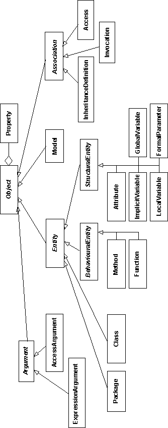

The FAMOOS Information Exchange Model
Serge Demeyer, Sander Tichelaar and Patrick Steyaert
Version 2.0 -- Last Modified: Wednesday, August 25, 1999 Available on the WWW at: http://www.iam.unibe.ch/~famoos/FAMIX/All comments are welcome: famoos@iam.unibe.ch.
The FAMOOS project (http://www.iam.unibe.ch/~famoos/) aims to develop a reengineering method for transforming object-oriented legacy code into frameworks. The reengineering method itself is defined around a life cycle model (see Figure 1).

Figure 1: FAMOOS reengineering life cycle
To realise that life cycle, three research areas which are likely to furnish solutions have been investigated. To understand the context of this work, check out [WHYFAMIX].
The FAMOOS partners have built a number of tool prototypes for conducting various experiments within those three research areas. However, the source code available for case studies is written in different implementation languages (C++, Ada and to a lesser extent Java and Smalltalk). To avoid equipping all the tool prototypes with parsing technology for all of the implementation languages, a common information exchange model with language specific extensions is specified (see Figure 2). This model has been named FAMIX, standing for FAMOOS Information Exchange Model.
Figure 2: Conception of the FAMIX Model
Based on our experiences with the tool prototypes built so far, plus given a survey of the literature on reengineering repositories and code base management systems we have specified the following requirements list. The list is split up in two, one part defining requirements concerning the data model, the other part specifying issues concerning the representation.
Data Model
Representation
We have adopted CDIF [CDIF94a] as the basis for the information exchange of information in the FAMOOS exchange model [EVALCDIF]. CDIF is an industrial standard for transferring models created with different tools. The main reasons for adopting CDIF are, that firstly it is an industry standard, and secondly it has a standard plain text encoding which tackles the requirements of convenient querying and human readability. Next to that the CDIF framework supports the extensibility we need to define our model and language plug-ins. More information concerning the CDIF standard can be found at http://www.eigroup.org/cdif/index.html.
A possible alternative for CDIF is XMI [XMI98]. However, when we started specifying the FAMIX model, XMI was considered too premature. Still, we consider XMI as a promising way to exchange FAMIX-based information.
This chapter describes the global structure of the FAMIX model. It introduces the core model (which illustrates the core entities and associations), the abstract part of the model (defining the abstract superclasses that will be extended), the basic data types, naming conventions and the level of extraction.
The core model (shown in Figure 3) specifies the entities and relations that can and should be extracted immediately from source code.

Figure 3: The Core Model
The core model consists of the main OO entities, namely Class, Method, Attribute and InheritanceDefinition. For reengineering, we need the other two, the associations Invocation and Access. An Invocation represents the definition of a Method calling another Method and an Access represents a Method accessing an Attribute. These abstractions are needed for reengineering tasks such as dependency analysis, metrics computation and reengineering operations. Typical questions we need answers for are: "are entities strongly coupled?", "which methods are never invoked?", "I change this method. Where do I need to change the invocations on this method?".
The abstract part of the complete model is shown in Figure 4. Object, Property, Entity and Association are made available to handle the extensibility requirement (see "2) Requirements Specification" - p.*). For specifying language plug-ins, it is allowed to define language specific Objects, plus it is allowed to add language specific attributes to existing Objects. Tool prototypes are more restricted in extensions to the model: they can define tool specific Properties for existing Objects. Next to that, they can add attributes to existing Objects, but they cannot extend the repertoire of entities and associations. For a complete description of how to extend the model, see appendix "B. How to extend the model" - p.*. The abstract classes StructuralEntity and BehaviouralEntity are needed by the associations.

Figure 4: Basic structure of the complete model
In the following sections we describe the different entities with their attributes, and how these entities are represented in the CDIF transfer format. Some of the attributes might not appear in the CDIF format. Mandatory attributes always appear. Optional attributes that do not appear, have either a default value or are unknown.
Besides the usual primitive data types (String, Integer, Boolean
) we have a number of extra data types in our model that are considered "basic". These are Name, Qualifier and Index:
QualifierName is a string that bears semantics inside the model, while a Qualifier is a string that gets its semantics from outside the model. A String does not bear any semantics. For instance, a uniqueName may be used to refer to another object, hence bears semantics inside the model. However, a sourceAnchor will store some information that must be interpreted by applications outside the model, hence is a qualifier. Finally, a comment line is a string, since it does not bear any semantics understandable by a computer. In CDIF these types are simply represented by Strings, or TextValues if they are multi-valued (see appendix "A. Clarifications on the CDIF Encoding" - p.* for a description of multi-valued strings in CDIF).- Index
The naming conventions used in the model transfers is as much as possible compliant with UML [Booc96a]. This means that the following rules apply:
package::subpackage::classname".package::subpackage::classname.attributename", "package::subpackage::classname.method().localvariablename"package::subpackage::functionname(para1,para2)", "package::subpackage::classname.methodname(para1,para2)"functionname(para1,para2)"functionname(para1, para2)".functionname(const para1,const para2)" The core model contains entities that not all parsers may provide. Next to that, some tools do not always need all of this information (e.g. a metrics tool might not need Invocation and Access, because many metrics can already be gathered from Class and Method alone). To allow focused models, we introduce the level of extraction.
Basically, the level of extraction is an integer, telling how much of the core model is actually extracted. In principle, the higher the number, the more information is available. The levels are set up in such a way that no information is available on a level that needs information from higher levels (for instance, Access is not usable if there are no Attribute's available). Next to that, it is possible that on the higher levels parts of the information aren't necessary for a certain task, or simply not computable by a certain tool. Therefore it is allowed to only provide parts of the information (designated by the "+/-").
Table 1 gives an overview of the levels of extraction.
|
Level 1 |
+/- Package
Level 1 is the minimum model that parsers should be able to provide and corresponds with what is usually understood as the interface of a class. |
|
Level 2 |
+/- GlobalVariable |
|
Level 3 |
+/- Access +/- Invocation |
|
Level 4 |
+/- Argument +/- FormalParameter+/- LocalVariable+/- ImplicitVariable |
Table 1: Levels of Extraction
This chapter describes the various classes that together specify the FAMIX model.
|
Object |
Property |
||||
|
sourceAnchor (): Qualifier |
 |
name (): Qualifier |
|||
|
 |
|||||
|
Association |
Entity |
||||
|
name (): Name |
|||||
Figure 5: The basic classes Object, Entity and Association
As stated in section 4.2, the classes Object, Entity, Association and Property are added to provide extensibility to the model.
Object is an abstract class without a superclass. Association and Entity are both abstract classes inheriting from Object. Property is a concrete class without a superclass. The attributes of these basic classes are:
- sourceAnchor: Qualifier; optional
file "<filespec>" start <start_index> end <end_index>.filespec> is a string holding the name of the source-file in an operating system dependent format (preferably a filename relative to some project directory). Note that filenames may contain spaces and double quotation marks. A double quotation mark in a filename should be escaped with a \". <start_index> and <end_index> are indices starting at 1 and holding the beginning/ending character position in the source file.startline, startcol, endline, endcol). Or the negative offset counting from the end of the file instead of from the beginning (negstart, negend). In CDIF a basic source anchor looks as follows (delimited with a |, see appendix "A. Clarifications on the CDIF Encoding" - p.* for a description of multi-valued strings in CDIF):(sourceAnchor #[file "factory.h" start 260 end 653|]#)
- comments: 0..N String; optional
(comments #[commentLines|]#,#[commentLines|]#,...)Entities and associations may own a number of properties where extensions of the core model may be stored. A Property has the following attributes:
- name: Qualifier; mandatory
Property within an Object. Thus, the name should be unique for all properties of a single Object.
- value: String; mandatory
CDIF example showing a class Widget with a Property containing the value 5 for some number-of-methods metric. They are related by the relationship HasProperty:
(Class ENT001
(name "Widget")
....
)
(Property PR005
(name "metric_NOM")
(value #[5]#)
)
(Entity.HasProperty.Property REL003 ENT001 PR005)
To enable a global referencing scheme based on names, the key classes in the model should respect the minimal interface of Entity.
- name: Qualifier; mandatory
- uniqueName: Name; mandatory
|
Model |
|
exporterName (): String |
A Model represents information concerning the particular system being modelled. Parsers must ensure that there is only instance of a Model in a complete transfer.
Model is a concrete class inheriting from Object. Besides inherited attributes, it has the following attributes:
CDIF Example of a model for a WidgetLibrary system implemented in Java
(Model FM0
(exporterName "sniff2famix")
(exporterVersion "2.0")
(exporterDate "1999/10/19")
(exporterTime "00.00.01")
(publisherName "Sander Tichelaar")
(parsedSystemName "WidgetLibrary")
(extractionLevel "3")
(sourceLanguage "Java")
(sourceDialect -NULL-)
)
|
Package |
|
belongsToPackage (): Name |
A Package represents a named sub-unit of a source code model, for example namespaces in C++, and packages in Java. What exactly constitutes such a sub-unit is a language dependent issue. Packages and other entities can only belong to one Package.
Package is a concrete class inheriting from Entity. Besides inherited attributes, it has the following attributes:
- belongsToPackage: name; optional
uniqueName (see also 4.4. Naming Conventions - p. *):if isNull (belongsToPackage(package)) then
uniqueName (package) = name (package)
else
uniqueName (package) = belongsToPackage (package)
+ "::" + name (package)CDIF Example of a package gui
(Package FM1
(name "gui")
(belongsToPackage-NULL-)
(uniqueName "gui")
)
|
Class |
|
isAbstract (): Boolean |
A Class represents the definition of a class in source code. What exactly constitutes such a definition is a language dependent issue.
Class is a concrete class inheriting from Entity. Besides inherited attributes, it has the following attributes:
- isAbstract: Boolean; optional
- belongsToPackage
: Name; optionalif isNull (belongsToPackage (class)) then
uniqueName (class) = name (class)
else
uniqueName (class) = belongsToPackage (class)
+ "::" + name (class)CDIF Example of a non-abstract class Widget in package gui (note the difference between name and uniqueName)
(Class FM1
(name "Widget")
(uniqueName "gui::Widget")
(isAbstract -FALSE-)
(sourceAnchor #[file "factory.h" start 260 end 653|]#)
)

Figure 9: BehaviouralEntity Hierarchy
The entities that define behaviour in our model are all subclasses of BehaviouralEntity.
|
BehaviouralEntity |
|
accessControlQualifier (): Qualifier |
A BehaviouralEntity represents the definition in source code of a behavioural abstraction, i.e. an abstraction that denotes an action rather than a part of the state. Subclasses of this class represent different mechanisms for defining such an entity.
BehaviouralEntity is an abstract class inheriting from Entity. Besides inherited attributes, it has the following attributes:
- signature: Qualifier; mandatory
package::subpackage::classname.methodname(parameters)" .
- isPureAccessor: Boolean; optional
- declaredReturnType: Qualifier; optional
int" in Java). declaredReturnType is null if the return type is not known or the empty string (i.e. "") if the BehavourialEntity does not have a return type (for instance, the C++ void; we don't use "void", because this causes problems for languages where it is possible to define a class called "void", like for instance Smalltalk and Ada). Note that this is consistent with UML 1.1 [Booc96a].- declaredReturnClass: Name; optional
declaredReturnType. The declaredReturnType might be the class itself, but might also be a pointer to a class (for instance, Class* in C++) or a primitive type (such as "int" in Java), or something else depending on the language. Therefore, the declaredReturnClass will contain the name of the class which is designated already by the declaredReturnType, or the name of the class where the declaredReturnType points to, null if it is unknown if there is an implicit class in the declaredRetunType, and the empty string (i.e. "") if it is known that there is no implicit class in the declaredReturnType. What exactly is the relationship between declaredReturnClass and declaredReturnType is a language-dependent issue.|
Method |
|
belongsToClass (): Name |
A Method represents the definition in source code of an aspect of the behaviour of a class. What exactly constitutes such a definition is a language dependent issue.
Method is a concrete class inheriting from BehaviouralEntity. Besides inherited attributes, it has the following attributes:
- belongsToClass: Name; mandatory
- hasClassScope: Boolean; optional
- isAbstract: Boolean; optional
- isConstructor: Boolean; optional
uniqueName (method) = belongsToClass (method) +
"." + signature (method)
CDIF Example (constructor for a class Widget. This method has no return type and therefore also no "return class", hence both attributes are empty):
(Method FM2
(name "Widget")
(belongsToClass "gui::Widget")
(sourceAnchor #[file "factory.h" start 321 end 326|]#)
(accessControlQualifier "public")
(hasClassScope -FALSE-)
(signature "Widget()")
(isAbstract -FALSE-)
(declaredReturnType "")
(declaredReturnClass "")
(uniqueName "gui::Widget.Widget()")
)
|
Function |
|
belongsToPackage (): Name |
A Function represents the definition in source code of an aspect of global behaviour. What exactly constitutes such a definition is a language dependent issue.
Function is a concrete class inheriting from BehaviouralEntity. Besides inherited attributes, it has the following attributes:
- belongsToPackage
: Name; optionalif isNull (belongsToPackage (function)) then
uniqueName (function) = name (function)
else
uniqueName (function) = belongsToPackage (function)
+ "::" + name (function)CDIF Example (of a global function "testFactory" without arguments and return type in sub package "test" of package "widgetfactory"):
(Function FM2
(name "testFactory")
(sourceAnchor #[file "factory.h" start 321 end 326|]#) (accessControlQualifier "public")
(signature "testFactory()")
(belongsToPackage"widgetfactory::test")
(declaredReturnType "")
(declaredReturnClass "")
(uniqueName "widgetfactory::test::testFactory()")
)
Figure 13: StructuralEntity Hierarchy
All possible variable definitions are subclasses of the class StructuralEntity. StructuralEntity itself participates in the Access association.
|
StructuralEntity |
|
declaredType (): Qualifier |
Figure 14: StructuralEntity
A StructuralEntity represents the definition in source code of a structural entity, i.e. it denotes an aspect of the state of a system. The different kinds of structural entities mainly differ in lifetime: some have the same lifetime as the entity they belong to, e.g. an attribute and a class, some have a lifetime that is the same as the whole system, e.g. a global variable. Subclasses of this class represent different mechanisms for defining such an entity.
StructuralEntity is an abstract class inheriting from Entity. Besides inherited attributes, it has the following attributes:
- declaredType: Qualifier; optional
int" in Java). declaredType is null if the return type is not known or the empty string (i.e. "") if the StructuralEntity does not have a return type (for instance, the C++ void; we don't use "void", because this causes problems for languages where it is possible to define a class called "void", like for instance Smalltalk and Ada). Note that this is consistent with UML 1.1 [Booc96a].- declaredClass: Name; optional
declaredType. The declaredType might be the class itself, but might also be a pointer to a class (for instance, Class* in C++) or a primitive type (such as "int" in Java), or something else depending on the language. Therefore, the declaredClass will contain the name of the class which is designated already by the declaredType, or the name of the class where the declaredType points to, null if it is unknown if there is an implicit class in the declared type, and the empty string (i.e. "") if it is known that there is no implicit class in the declaredReturnType. What exactly is the relationship between declaredClass and declaredType is a language-dependent issue.|
Attribute |
|
belongsToClass (): Name |
An Attribute represents the definition in source code of an aspect of the state of a class. What exactly constitutes such a definition is a language dependent issue.
Attribute is a concrete class inheriting from StructuralEntity . Besides inherited attributes, it has the following attributes:
- belongsToClass: Name; mandatory
- accessControlQualifier: Qualifier; optional
- hasClassScope: Boolean; optional
uniqueName (attribute) = belongsToClass (attribute) +
"." + name (attribute)
CDIF Example of a private attribute wTop in class Widget:
(Attribute FM22
(name "wTop")
(belongsToClass "gui::Widget")
(sourceAnchor #[file "factory.h" start 281 end 284|]#)
(declaredType "int")
(declaredClass "")
(accessControlQualifier "private")
(uniqueName "gui::Widget.wTop")
)
|
GlobalVariable |
|
belongsToPackage (): Name |
A GlobalVariable represents the definition in source code of a variable with a lifetime equal to the lifetime of a running system, and which is globally accessible. What exactly constitutes such a definition is a language dependent issue.
GlobalVariable is a concrete class inheriting from StructuralEntity . Besides inherited attributes, it has the following attributes:
- belongsToPackage
: Name; optionaluniqueName (the second branch of the if statement is necessary because a global variable can have package scope) (see also 4.4. Naming Conventions - p. *):
if isNull (belongsToPackage(globalVariable)) then
uniqueName (globalVariable) = name (globalVariable)
else
uniqueName (globalVariable) = belongsToPackage (globalVariable)
+ "::" + name (globalVariable)CDIF Example:
(GlobalVariable FM23
(name "TRUE")
(sourceAnchor #[file "factory.h" start 287 end 291|]#)
(declaredType "int")
(declaredClass "")
(accessControlQualifier "public")
(uniqueName "TRUE")
)
|
ImplicitVariable |
|
belongsToContext (): Qualifier |
An ImplicitVariable represents the definition in source code of context dependent reference to a memory location (i.e., 'this' in C++ and Java, 'self' and 'super' in Smalltalk). What exactly constitutes such a definition is a language dependent issue.
ImplicitVariable is a concrete class inheriting from StructuralEntity . Besides inherited attributes, it has the following attributes:
- belongsToContext
: Qualifier; optionalif isNull (belongsToContext(implicitVariable)) then
uniqueName (implicitVariable) = name (implicitVariable)
else
uniqueName (implicitVariable) =
belongsToContext(implicitVariable)
+ "." + name (implicitVariable)
Example of an implicit variable super:
MotifWidget.print () {
super.print();
System.out.print(" Motif");
}
In CDIF:
(ImplictVariable FM77
(name "super")
(declaredType "gui::Widget")
(declaredClass "gui::Widget")
(belongsToContext "gui::MotifWidget")
(uniqueName "gui::MotifWidget.super")
)
|
LocalVariable |
|
belongsToBehaviour (): Name |
A LocalVariable represents the definition in source code of a variable defined locally to a behavioural entity. What exactly constitutes such a definition is a language dependent issue.
LocalVariable is a concrete class inheriting from StructuralEntity . Besides inherited attributes, it has the following attributes:
- belongsToBehaviour: Name; mandatory
BehaviouralEntity owning the variable. It uses the uniqueName of this entity as a reference.
uniqueName (localVar) = belongsToBehaviour (localVar) +
"." + name (localVar)
Example of a local variable position_:
Class ScrollBar {
computePosition(int x,int y,int width,int height) {
int position_;
. . .
}
}
In CDIF:
(LocalVariable FM76
(name "position_")
(sourceAnchor #[file "factory.h" start 85 end 89|]#)
(declaredType "int")
(declaredClass "")
(belongsToBehaviour "ScrollBar.computePosition(int,int,int,int)")
(uniqueName
"gui::ScrollBar.computePosition(int,int,int,int).position_ ")
)
|
FormalParameter |
|
belongsToBehaviour (): Name |
A FormalParameter represents the definition in source code of a formal parameter, i.e. the declaration of what a behavioural entity expects as an argument. What exactly constitutes such a definition is a language dependent issue.
FormalParameter is a concrete class inheriting from StructuralEntity . Besides inherited attributes, it has the following attributes:
- belongsToBehaviour: Name; mandatory
BehaviouralEntity owning the variable. It uses the uniqueName of this entity as a reference.
- position: Index; mandatory
uniqueName (formalPar) = belongsToBehaviour (formalPar) +
"." + name (formalPar)
Example (w is the formal parameter):
Window::addWidget(Widget& w) { ...... };
In CDIF:
(FormalParameter FM41
(name "w")
(declaredType "gui::Widget&")
(declaredClass "gui::Widget")
(belongsToBehaviour "gui::Window.addWidget(Widget&)")
(position 1)
(uniqueName "gui::Window.addWidget(Widget&).w")
)
|
InheritanceDefinition |
|
subclass (): Name |
Figure 20: InheritanceDefinition
An InheritanceDefinition represents the definition in source code of an inheritance association between two classes. One class then plays the role of the superclass, the other plays the role of the subclass. What exactly constitutes such a definition is a language dependent issue.
InheritanceDefinition is a concrete class inheriting from Association . Besides inherited attributes, it has the following attributes:
- subclass: Name; mandatory
- superclass: Name; mandatory
- accessControlQualifier: Qualifier; optional
- index: Index; optional
CDIF Example of an inheritance relationship between Scrollbar and its superclass Widget:
(InheritanceDefinition FM27
(subclass "gui::ScrollBar")
(superclass "gui::Widget")
(accessControlQualifier "public")
(index 1)
)
|
Access |
|
accesses (): Name |
An Access represents the definition in source code of a BehaviouralEntity accessing a StructuralEntity. Depending on the level of extraction (see Table 1, p. *), that StructuralEntity may be an attribute, a local variable, an argument, a global variable
. What exactly constitutes such a definition is a language dependent issue. However, when the same structural entity is accessed more than once in a method body, then parsers should generate a separate access-association for each occurrence.
Access is a concrete class inheriting from Association . Besides inherited attributes, it has the following attributes:
- accesses: Name; mandatory
- accessedIn: Name; mandatory
- isAccessLValue: Boolean; optional
Example of the method print() accessing wTop (both defined in class Widget):
virtual print () { cout << "top of widget " << wTop; };
In CDIF:
(Access FM18
(accesses "gui::Widget.wTop")
(accessedIn "gui::Widget.print()")
(isAccessLValue -FALSE-)
)
|
Invocation |
|
invokedBy (): Name |
An Invocation represents the definition in source code of a BehaviouralEntity invoking another BehaviouralEntity. What exactly constitutes such a definition is a language dependent issue. However, when the same behavioural entity is invoked more than once in a method body, then parsers should generate a separate invocation-association for each occurrence.
It is important to note that due to polymorphism, there exists at parse time a one-to-many relationship between the invocation and the actual entity invoked: a method, for instance, might be defined on a certain class, but at runtime actually invoked on an instance of a subclass of this class. This explains the presence of the base attribute and the candidates aggregation.
Invocation is a concrete class inheriting from Association. Besides inherited attributes, it has the following attributes:
- invokedBy: Name; mandatory
BehaviouralEntity doing the invocation. It uses the uniqueName of the entity as a reference.
- invokes: Qualifier; mandatory
BehaviouralEntity invoked. Due to polymorphism, the signature of the invoked BehaviouralEntity is not enough to assess which BehaviouralEntity is actually invoked. Further analysis based on the arguments is necessary. Concatenated with the base attribute this attribute constitutes the unique name of a behavioural entity.
- base: Name; optional
invokes attribute, this attribute constitutes the unique name of a behavioural entity.
- candidates: 0 .. N Name; optional
BehaviouralEntities. Each name refers to a BehaviouralEntity that may be the actual one invoked at run-time. See appendix "A. Clarifications on the CDIF Encoding" - p.* for a description of multi-valued strings in CDIF.CDIF Example. The method Widget.print() is invoked according to the source code. The actual method invoked at runtime, however, could be the print() method of one of the subclasses MotifWidget or SwingWidget:
(Invocation FM35
(invokedBy "gui::ScrollBar.print()")
(invokes "print()")
(base "gui::Widget")
(candidates #[gui::Widget.print()|]#,
#[motif::MotifWidget.print()|]#,
#[javax::swing::SwingWidget.print()|]#)
)
Figure 23: Argument, ExpressionArgument & AccessArgument
An Argument represents the passing of an argument when invoking a BehaviouralEntity. What exactly constitutes such a definition is a language dependent issue. The model distinguishes between two kind of arguments, an ExpressionArgument or an AccessArgument. The former means that some complex expression is passed, in that case the contents of the expression is not further specified. The latter means that a reference to a StructuralEntity is passed, thus involving an Access to the corresponding structural entity, hence a reference to the corresponding Access is stored within the AccessArgument.
Both ExpressionArgument and AccessArgument are concrete classes inheriting from Argument. Argument is an abstract class inheriting from Object. Besides inherited attributes, Argument has the following attributes:
- position: Index; mandatory
- isReceiver: Boolean; mandatory
Example of a method print() with two method invocations and their arguments. Note that the first call has one argument (namely super) and the second call has two (namely System.out and " Motif":
MotifWidget.print () {
super.print();
System.out.print(" Motif");
}
In CDIF:
#| FM90 expresses the access of the super implicit variable |# (Access FM90
(accesses "gui::MotifWidget.super")
(accessedIn "gui::MotifWidget.print()")
) #| FM91 and FM92 express the passing of super as an argument to print |# (AccessArgument FM91
(position 1)
(isReceiver -TRUE-)
)
(AccessArgument.HasAccess.Access FM92 FM91 FM90) #| FM101 and FM102 express the invocation of print with argument super.
Note that gui::Widget is the only candidate of the invocation. |# (Invocation FM101
(invokedBy "gui::MotifWidget.print()")
(invokes "print()")
(base "gui::Widget")
(candidates #[gui::Widget|]#)
)
(Invocation.HasArgument.Argument FM102 FM101 FM91) #| FM110 expresses the access of the System.out attribute |# (Access FM110
(accesses "java::lang::System.out")
(accessedIn "gui::MotifWidget.print()")
) #| FM111 and FM112 express the passing of System.out as argument to print|# (AccessArgument FM111
(position 1)
(isReceiver -TRUE-)
)
(AccessArgument.HasAccess.Access FM112 FM111 FM110) #| FM120 expresses the passing of the constant value " Motif" as argument to print |# (ExpressionArgument FM120
(position 2)
(isReceiver -FALSE-)
)
#| FM121, FM122 and FM123 express the invocation of print with arguments System.out and " Motif" |# (Invocation FM121
(invokedBy "gui::MotifWidget.print()")
(invokes "print()")
(base "PrintStream")
)
(Invocation.HasArgument.Argument FM122 FM121 FM111)
(Invocation.HasArgument.Argument FM123 FM121 FM120)
For an in depth treatment of the question why UML is not sufficient, we refer the reader to the achievement report addressing this specific issue [WHYFAMIX], which also appeared as [Deme99]. In brief, the argumentation is as follows:
The unified Modelling Language (UML) [Booc96a] is rapidly becoming the standard modelling language for object-oriented software, even in industry. So, UML is a viable candidate for serving as the data model behind our exchange format. Nevertheless, UML does not include internal dependencies such as method invocations and variable accesses. Those dependencies are necessary in the problem detection and reorganisation phases of the reengineering life cycle (see Figure 1). Thus, choosing UML would violate the requirement of being a sufficient basis for reengineering operations (see "Requirements Specification" - p.*).
However, we relied heavily on UML in the terminology and naming conventions applied in our model to become independent of the implementation language. For example, we talk about attributes instead of members (C++) or instance variable (Smalltalk) and we talk about classes instead of types (Ada).
CORBA is receiving widespread attention as interoperability standard between different object-oriented implementation languages. The IDL (interface description language) is used to specify the external interface of a software component and there are tools that extract IDL from source code. As such, CORBA/IDL is a viable candidate to serve as our exchange format.
However, CORBA/IDL only describes the interface of a software component, and, like UML, not the internal dependencies such as method invocations and variable accesses. Thus, also CORBA/IDL would violate the requirement of being a sufficient basis for reengineering operations (see "Requirements Specification" - p.*).
Because of polymorphism, not all method invocations can be resolved at compile time. Also, a model based on source code is not ideal for identifying sequences of interactions between objects. Thus, basing the model solely on static information eliminates some interesting facts about a software system and one might consider including run-time information as well.
For the moment we consider the issue too premature to include in an information exchange standard. The technology is available (i.e., Look for C++, method wrappers for Smalltalk) but is certainly not part of the standard tool repertoire. And extracting run-time information generates such a wealth of data that we cannot assess at this moment what is important enough to maintain.
[DETECTM] FAMOOS Achievement Report DETECTM-A.2.3.2. " Specification of Techniques and Strategies for Problem Detection". Benedikt Schulz, Forschungszentrum Informatik.
[DOCUM] FAMOOS Achievement Report DOCUM-A.2.3.1. " Documentation and Model Capture Method(Grouping)". Oliver Ciupke, Forschungszentrum Informatik.
[EVALCDIF] FAMOOS Achievement Report EVALCDIF "Evaluation of the CDIF Transfer-Format". Thomas Kohler, Daimler-Benz AG.
[REORGOP] FAMOOS Achievement Report REORGOP-A.2.3.3./A.2.3.4. " Specification of Complex Reengineering Operations and Target Structures ". Joachim Weisbrod, Forschungszentrum Informatik.
[WHYFAMIX] FAMOOS Achievement Report WHYFAMIX-A.2.4.2 "Why FAMIX -- Shortcomings of UML for Round-trip Engineering". Serge Demeyer, Stéphane Ducasse, Sander Tichelaar, University of Berne. See http://www.iam.unibe.ch/~famoos/FAMIX/.
[Booc96a] Booch, G., Jacobson, I. and Rumbaugh, J, "The Unified Modelling Language for Object-Oriented Development". See http://www.rational.com/.
[CDIF94a] CDIF Technical Committee, "CDIF Framework for Modelling and Extensibility", Electronic Industries Association, EIA/IS-107, January 1994. See http://www.eigroup.org/cdif/index.html.
[CDIF94b] CDIF Technical Committee, "CDIF Transfer Format Syntax SYNTAX.1", Electronic Industries Association, EIA/IS-109, January 1994. See http://www.eigroup.org/cdif/index.html.
[CDIF94c] CDIF Technical Committee, "CDIF Transfer Format Encoding ENCODING.1", Electronic Industries Association, EIA/IS-110, January 1994. See http://www.eigroup.org/cdif/index.html.
[Deme99] Serge Demeyer, Stéphane Ducasse and Sander Tichelaar, "Why Unified is not Universal ? UML Shortcomings for Coping with Round-trip Engineering", Proceedings UML'99 (The Second International Conference on The Unified Modeling Language), Bernhard Rumpe (Ed.), LNCS ????, Springer-Verlag, Kaiserslautern, Germany, October, 1999.
[XMI98] OMG, "XML Metadata Interchange (XMI)", OMG Document ad/98-10-05, October 1998. See http://www.omg.org/.
To satisfy the requirements for information exchange between tools (see "Requirements Specification" - p.*), we choose the CDIF standard as the basis for transferring information between tools. This choice at least satisfies the "supports industry standards" and the "extensible" requirements. Moreover, CDIF is open with respect to the specific format for a transfer, or to state it in CDIF terminology allows for different syntaxes and encodings. By adopting the CDIF syntax SYNTAX.1 with the plain text encoding ENCODING.1 (see [CDIF94b] and [CDIF94c]), we also satisfy the "human readable" and "simple to process" requirements.
CDIF has proven to be a proper solution for our purposes. However, the explicit definition of associations and the lack of multi-valued string attributes leads to verbose transfers that are difficult to read for humans and hinders the merging of information coming from different sources. Also, there are some things we found unclear while reading the CDIF specifications. Therefore, this part of the appendix describes our interpretation of the CDIF standard.
We avoid explicit relationships for the core model (see Figure 3).This might seem a bit strange at first, but our experiments have shown that heavy use of CDIF relationships compromises the readability of the document a lot. First of all, information gets scattered around in the transfer instead of being nicely encapsulated in the entity it belongs to. And second, CDIF relationships employ meaningless identifiers unique within a transfer only instead of references by name. The latter also hinders the combination of information from different sources.
Below is an example of how we encapsulate a "belongsToClass" attribute in Method, instead of defining an explicit "Class.HasMethod.Method" relationship and instantiating it for every Class/Method association. Thus we get ...
(Method FM35
(name "print")
(belongsToClass "Widget")
...
)
instead of
(Class FM17
(name "Widget")
...
) ...
(Method FM35
(name "print")
...
) ...
(Class.HasMethod.Entity FM56 FM17 FM35)
To deal with many-to-1 relationships we need multi-valued string attributes. Indeed, we avoid explicit relationships to enhance the readability of a document and to ease combination of information from different sources. However, using a string attribute to encode a relationship (like we did above) only allows for 1-to-many relationships.
CDIF provides IntegerList and PointList in its set of basic data types, thus in principle CDIF permits the use of multi-valued attributes. Unfortunately, there is no basic data type that copes with multi-valued strings. Yet, the CDIF "TextValue" data type comes near, thus in some rare occasions we interpret "TextValue" as a multi-valued text attribute.
In the original CDIF standard, a TextValue denotes a set of characters which is divided into blocks with a maximum of 1024 characters. The beginning of each block is marked by "#[" while the end is marked by "]#". The actual value of the text is the concatenation of the blocks.
To represent a multi-valued string attribute with a TextValue, we interpret each block in a TextValue as a separate string. Also, we require that each one of those strings must append a special delimiter character (which is "|") to its end so that the original multi-valued strings can be retrieved from the concatenated blocks. In the (unlikely) situation that a "|" appears in a string value it should be escaped with "\|". Thus we get ...
(Invocation FM35
(invokedBy "ScrollBar.print()")
(invokes "print()")
(candidates #[Widget.print()|]#,
#[MotifWidget.print()|]#,
#[SwingWidget.print()|]#)
)
instead of (using CDIF relationships):
(Invocation FM35
(invokedBy "ScrollBar.print()")
(invokes "print()")
) ... (Candidate FM45
(value "Widget.print()")
) (Candidate FM46
(value "MotifWidget.print()")
) (Candidate FM47
(value "SwingWidget.print()")
)
...
(Invocation.HasCandidate.Candidate FM87 FM35 FM45) (Invocation.HasCandidate.Candidate FM88 FM35 FM46)
(Invocation.HasCandidate.Candidate FM89 FM35 FM47)
Considering the "Conception of the FAMIX Model" (see Figure 2), we see that there are two situations in which the model will be extended. The first corresponds with a language-specific plug-in, while the second corresponds with a tool-specific addition. Considering the model itself (see Figure 4 and Figure 5), there are two possible kinds of extensions. One is to add attributes to existing classes, the other is to create new classes.
To ensure that the various tools will be able to deal with all extensions, it is necessary to specify what and how to extend. This is the purpose of the following rules.
The motivation behind the first rule is that reengineering tools should always be able to work together. A reengineering tool that is dependent of extra classes will complicate co-operation, hence the restriction.
Because the second rule is counter-intuitive, we will elaborate on the motivation. Indeed, since CDIF offers inheritance, extensions to the model are tempted to create subclasses of existing classes to add new attributes. However, such an approach implies that all tools that process a CDIF transfer must know about the extra subclasses defined in an extension, hence must completely analyse the meta-model part of a CDIF transfer.
As an example consider an extension for a C++ class, where we add an attribute called "friends", which is a multi-valued attribute holding the names of all friend classes and methods of a certain class. If we define the new attribute as an attribute of "Class", the CDIF transfer will contain a class entity with a potentially unknown attribute. Tools that do not know about this extra attribute may safely ignore it. For instance, a simple querying tool (e.g., grep) will be able extract information out of a transfer (see Figure 24 (a)) without worrying about the extra attribute. However, if we define a new subclass C++Class, which contains the additional attribute, a transfer will contain "C++Class" entities. Tools that do not know about this subclass will break because they do not know the extension and therefore do not recognise the C++Class (see Figure 24 (b)).

Figure 24: Example of an extension.
(a) without subclassing, correct (b) with subclassing, incorrect.
The FAMIX Model is defined in the subject area FAMOOS. It only uses the Foundation subject area, which is the basic CDIF subject-area that defines an entity-relationship model and is mandatory to use by all models.
For the complete definition of the meta-model in CDIF, check
http://www.iam.unibe.ch/~famoos/FAMIX/

Achievement A2.4.1
FAMIX 2.0|
Project Id: |
Esprit IV #21975 "FAMOOS" |
|
Deliverable Id: |
D 2.2 FINALFHB Final FAMOOS Methodology Handbook |
|
Date for delivery: |
31.08.99 |
|
Planned date for delivery: |
31.08.99 |
|
WP(s) contributing to: |
2 |
|
Author(s): |
S. Demeyer, S. Ducasse, T. Richner, M. Rieger, P. Steyaert, S. Tichelaar |
Object-oriented, reengineering, reverse engineering, code repository, round-trip engineering, FAMOOS, FAMIX.
|
Ver |
Date |
Editor(s) |
Status & Notes |
|
0.4 |
17.11.97 |
S. Demeyer; P. Steyaert |
First draft version. Released to all the participants of the Ulm-workshop (21.11.97). |
|
0.5 |
24.11.97 |
S. Demeyer |
Quick tour of revised model; incorporates feedback generated during workshops at FZI (20.11.97) and Daimler-Benz (21.11.97). |
|
0.6 |
09.01.98 |
S. Demeyer |
Expanded quick tour into a full specification. Changed original document template for convenient generation of HTML. |
|
1.0 |
30.03.98 |
S. Demeyer |
Final release (see below for the details) |
|
Final release:
|
|||
|
1.1alpha |
15.06.98 |
S. Tichelaar |
Adapted Model + Included CDIF examples |
|
|||
|
1.1 |
1.07.98 |
S. Tichelaar, S. Demeyer |
|
|
2.0 |
25.08.99 |
S. Tichelaar, S. Demeyer |
|
|
|||
Some issues couldn't be incorporated in the 2.0 release due to time constraints:
FAMIX 2.0
*Abstract
*1) Introduction
*2) Requirements Specification
*3) CDIF Transfer Format
*4) Description of FAMIX
*4.1. The Core Model
*4.2. The abstract part of the model
*4.3. Basic Data Types
*4.4. Naming Conventions
*4.5. Level of Extraction
*5) Definition of FAMIX
*5.1. The abstract part: Object, Entity and Association
*5.2. Model
*5.3. Package
*5.4. Class
*5.5. BehaviouralEntity Hierarchy
*5.6. BehaviouralEntity
*5.7. Method
*5.8. Function
*5.9. StructuralEntity Hierarchy
*5.10. StructuralEntity
*5.11. Attribute
*5.12. GlobalVariable
*5.13. ImplicitVariable
*5.14. LocalVariable
*5.15. FormalParameter
*5.16. InheritanceDefinition
*5.17. Access
*5.18. Invocation
*5.19. Argument, ExpressionArgument & AccessArgument
*6) Open Questions
*6.1. Why not UML? Why not CORBA/IDL?
*6.2. What about Dynamic Information?
*7) References
*7.1. FAMOOS Internal References
*7.2. External References
*Appendices
*A. Clarifications on the CDIF Encoding
*A.1. Avoid Explicit Relationships
*A.2. Allow multi-valued String Attributes
*B. How to extend the model
*C. The FAMIX Model in CDIF
*D. The complete FAMIX Model
*Cover Pages
*1) Identification
*2) Abstract
*3) Keywords
*4) Version History
*5) Issues for future releases
*6) Table of Contents
*7) List of Figures
*8) List of Tables
*
Figure 1: FAMOOS reengineering life cycle
*Figure 2: Conception of the FAMIX Model
*Figure 3: The Core Model
*Figure 4: Basic structure of the complete model
*Figure 5: The basic classes Object, Entity and Association
*Figure 6: Model
*Figure 7: Package
*Figure 8: Class
*Figure 9: BehaviouralEntity Hierarchy
*Figure 10: BehaviouralEntity
*Figure 11: Method
*Figure 12: Function
*Figure 13: StructuralEntity Hierarchy
*Figure 14: StructuralEntity
*Figure 15: Attribute
*Figure 16: GlobalVariable
*Figure 17: ImplicitVariable
*Figure 18: LocalVariable
*Figure 19: FormalParameter
*Figure 20: InheritanceDefinition
*Figure 21: Access
*Figure 22: Invocation
*Figure 23: Argument, ExpressionArgument & AccessArgument
*Figure 24: Example of an extension. (a) without subclassing, correct (b) with subclassing, incorrect.
*
Table 1: Levels of Extraction
*